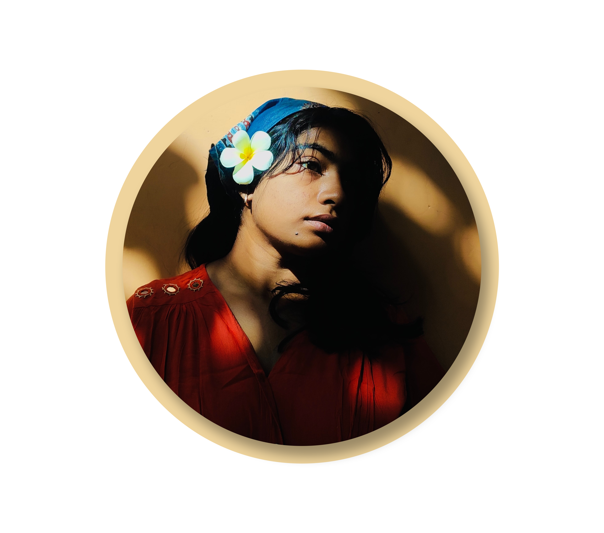

I'M A UI/UX DESIGNER FROM LONDON, UK
I am John Doe, And I craft high-performing and delightful experiences tailored and conversion-focused

I am John Doe, And I craft high-performing and delightful experiences tailored and conversion-focused